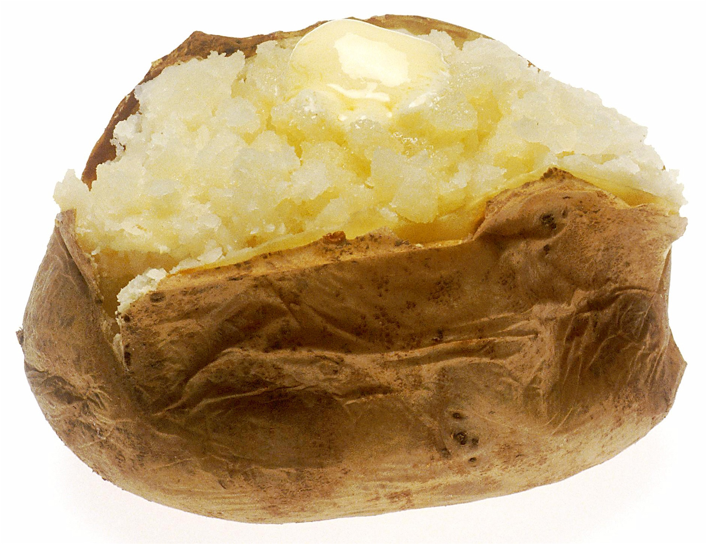

Microwaved Baked Potato with Stove Cooked Chicken

Description
This recipe takes two simple food items, a baked potato and chicken, and combines them for a filling meal.
A microwave is required in order to bake the potato. A skillet is needed to fry the chicken.
Ingredients
- 1 Russet baking potato
- 1/4 lb Preferred Chicken
- 1 tbsp Vegetable oil
Directions
- Wash the potato and place it in a grocery bag or microwaveable substitue
- Place the potato into the microwave and either use your microwave's preset or microwave on High for 7-8 mins
- Place pan on medium-high heat
- Pour 1 tbsp of vegetable oil onto pan
- When pan is hot, place 1/4 lb of chicken onto the skillet
- Cook chicken for 6-7 mins with occasional stiring, or until chicken is fully cooked
- Once cooked, split open the baked potato and place cooked chicken inside
Note: You can add butter, sour cream, cheese, green onions, or any other favored tastes.
Home